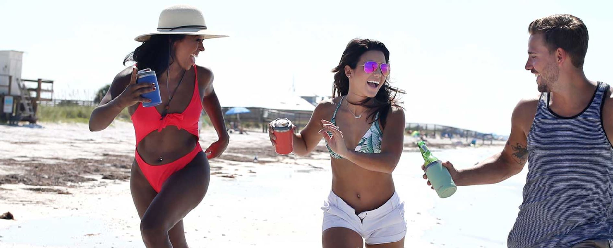
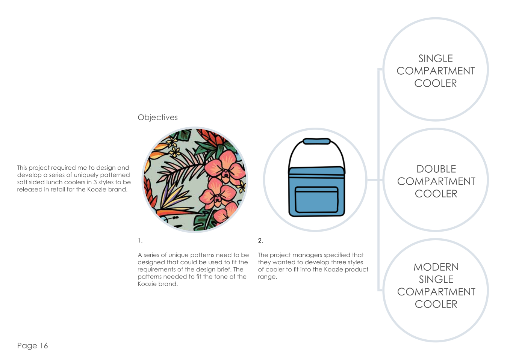
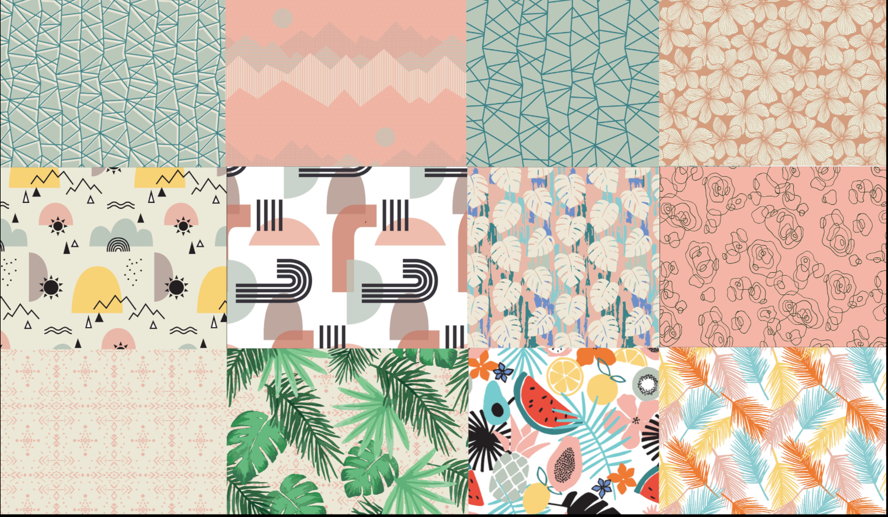
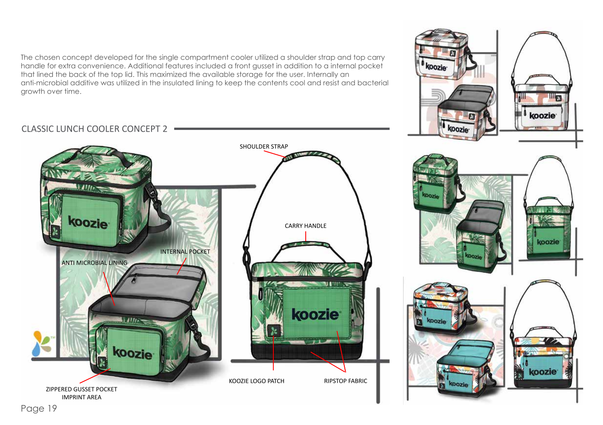
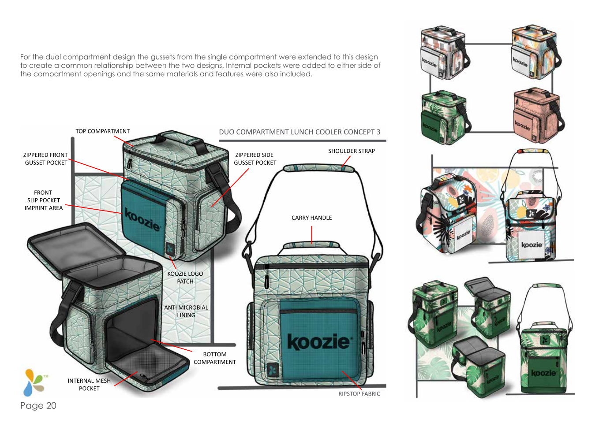
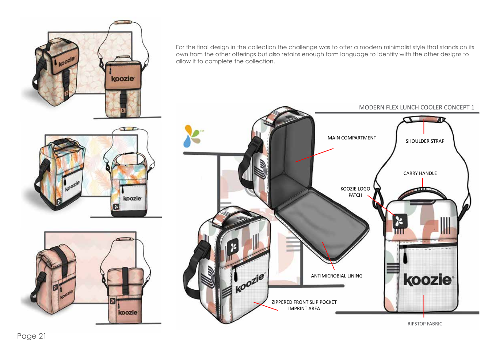

Koozie Koolers
Infusing fun without compromising on practicality.
As part of Koozie Group's rebranding campaign, they aimed to launch a line of seasonal coolers that aligned with their core identity. I was tasked with designing a range of coolers that captured the essence of this objective without compromising on style or functionality.
Ideation

I started with exploratory sketches to establish the form and functionality of the potential designs. Once a preliminary direction for the form was determined, a series of patterns were developed that would define the fabric choices to complement and further refine the concepts.
   